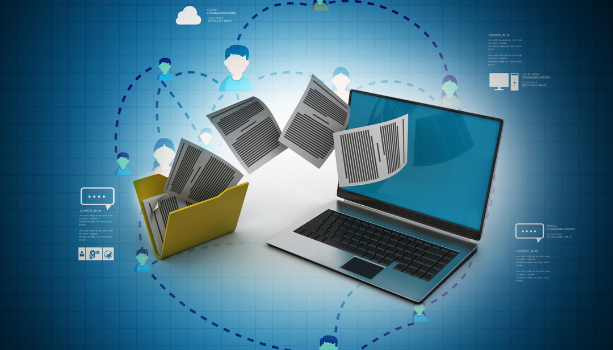

The term "ethics" refer to the set of moral principles that one should abide by. Cyberethics is that branch of philosophy that is used to analyse the nature and social impact of computer technology as well as the standards of conduct with respect to proper use of computers. It involves social issues, such as access rights, working place monitoring, censorship and junk mail; professional issues such as professional responsibility and code of conduct; legal issues such as legal obligation data protection, computer misuse and software piracy.
More About Cyber Ethics...
What Is Netiquettes ?
The term "Netiquette" is a combination of two words-Net (Internet) Etiquette (Good Manners). It is defined as a special set of rules that governs the behaviour of a user communicating online. The communication can be via e-mails, forums, blogs, and social networking sites, etc.
More About Netiquettes ...
Cyber Ethics For E-commerce .
The Internet has significantly changed the way of conducting business all over the world. E-Commerce stands for Electronic Commerce, which refers to the transaction of goods and services online, using the Internet. The Internet offers us convenient ways to shop from our homes or offices for almost everything. We can buy or sell new, as well as second-hand goods. While buying and selling products, each associate should stick to ethical conduct to ensure that no one is cheated or tricked in any form. Good ethics lead to the company providing the most reliable information about products or services. Doing business legally and ethically benefits not only the company, but also its stakeholders, includingemployees, customers, suppliers, investors, etc., and thus increases trust and satisfaction .
More About Cyber Ethics For E-commerce ...
Secure Data Transmission .

Secure data transmission is imperative to privacy and protection from cyber and identity theft. This step ensures that the users' data travels through a secure environment that is resistant to penetration and hacking .
More About Secure Data Transmission ...
Other Ethical Issues .
The onset of the Internet has marked the present time as the 'Information Age', which implies that the publishing and access to information are fast, easy, and convenient. With this ease of access, comes the issue of unauthorised access and sharing of proprietary and confidential information.
More About Other Ethical Issues ...


 The Internet has significantly changed the way of conducting business all over the world. E-Commerce stands for Electronic Commerce, which refers to the transaction of goods and services online, using the Internet. The Internet offers us convenient ways to shop from our homes or offices for almost everything. We can buy or sell new, as well as second-hand goods. While buying and selling products, each associate should stick to ethical conduct to ensure that no one is cheated or tricked in any form. Good ethics lead to the company providing the most reliable information about products or services. Doing business legally and ethically benefits not only the company, but also its stakeholders, includingemployees, customers, suppliers, investors, etc., and thus increases trust and satisfaction .
More About Cyber Ethics For E-commerce ...
The Internet has significantly changed the way of conducting business all over the world. E-Commerce stands for Electronic Commerce, which refers to the transaction of goods and services online, using the Internet. The Internet offers us convenient ways to shop from our homes or offices for almost everything. We can buy or sell new, as well as second-hand goods. While buying and selling products, each associate should stick to ethical conduct to ensure that no one is cheated or tricked in any form. Good ethics lead to the company providing the most reliable information about products or services. Doing business legally and ethically benefits not only the company, but also its stakeholders, includingemployees, customers, suppliers, investors, etc., and thus increases trust and satisfaction .
More About Cyber Ethics For E-commerce ...